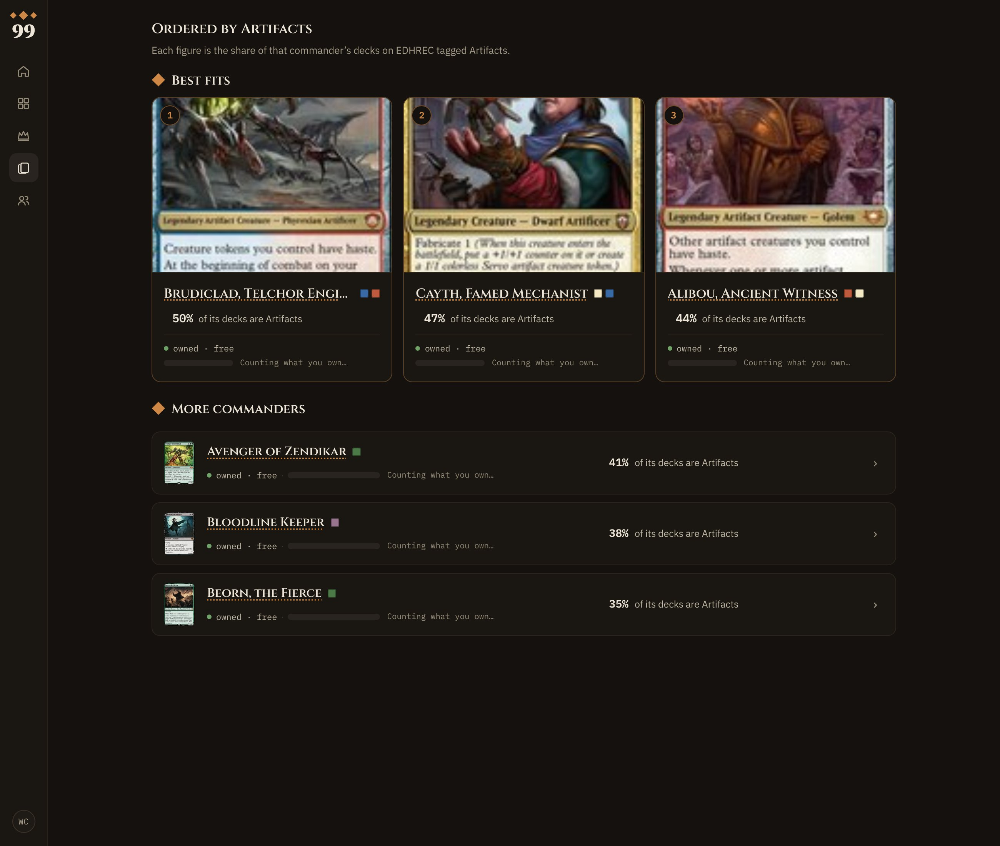
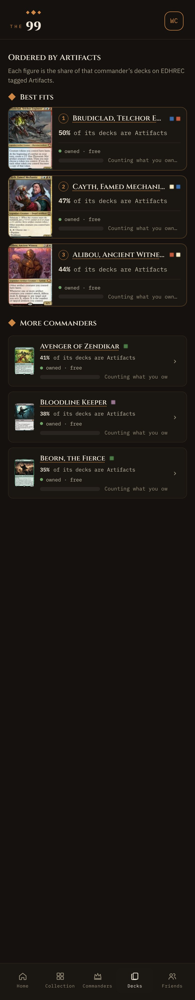
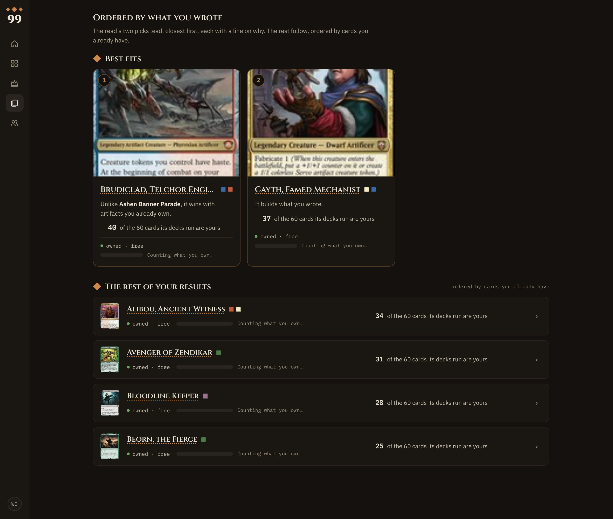
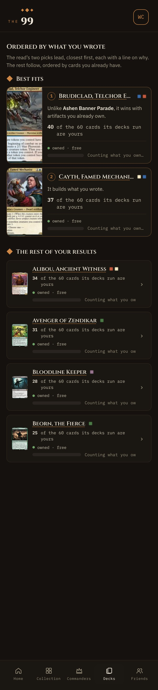

R4 Help me choose results · heads
Best fits, More commanders and The rest of your results use the ◆ display head; the divider's hairline goes. Left pair: fit order. Right pair: after a read, where the rest head replaces More commanders so two heads never stack.



